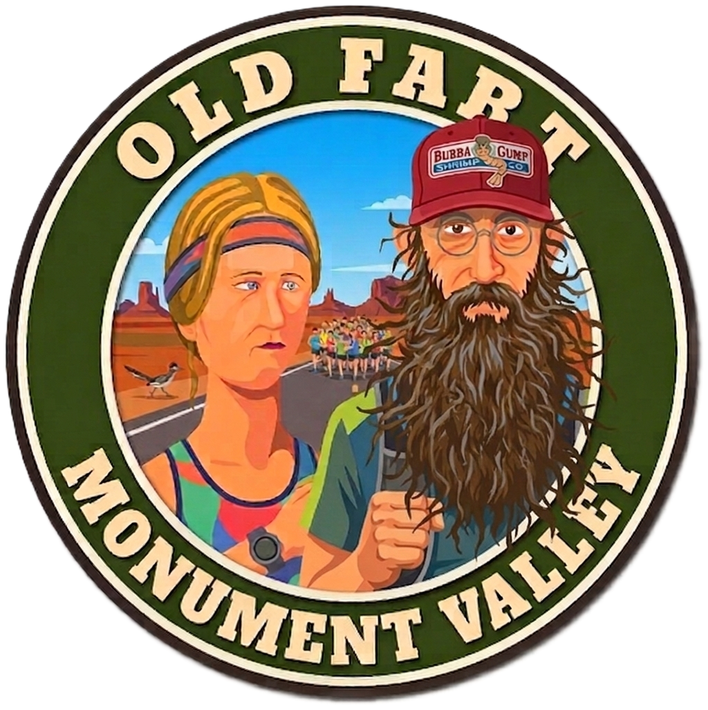
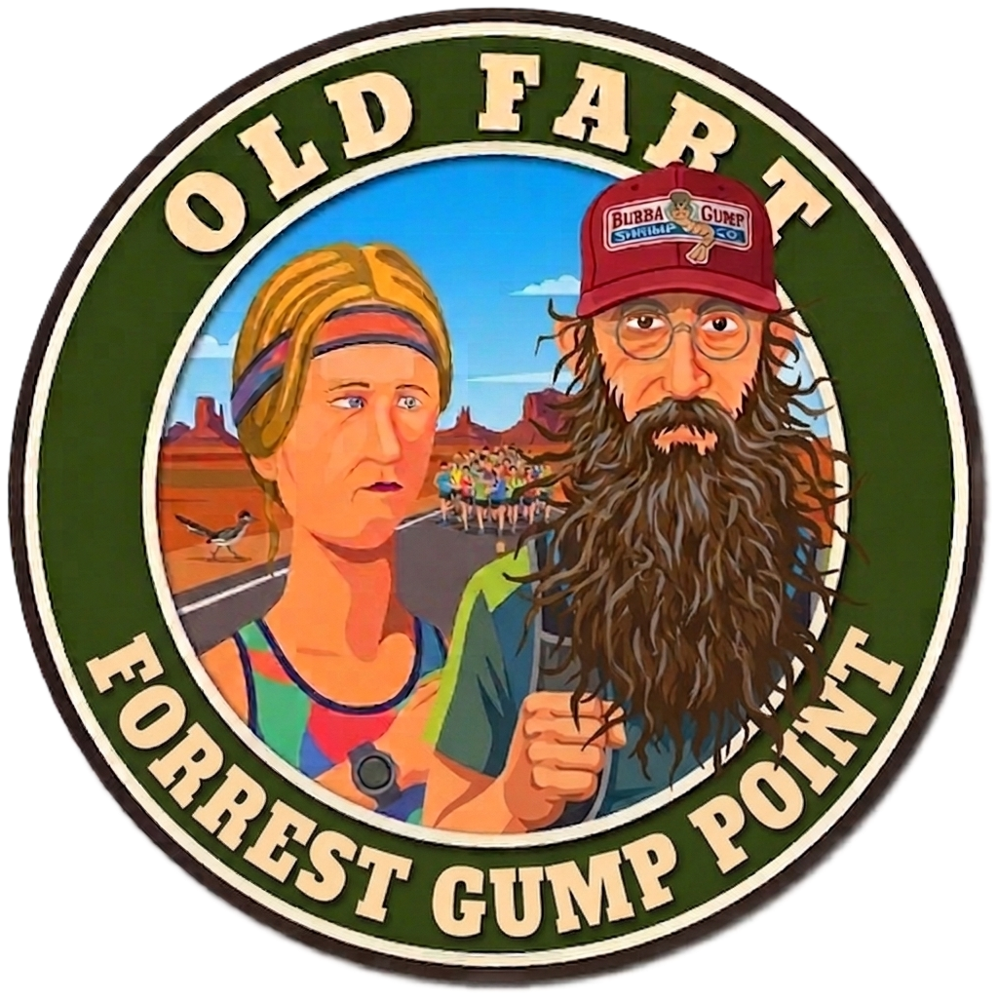
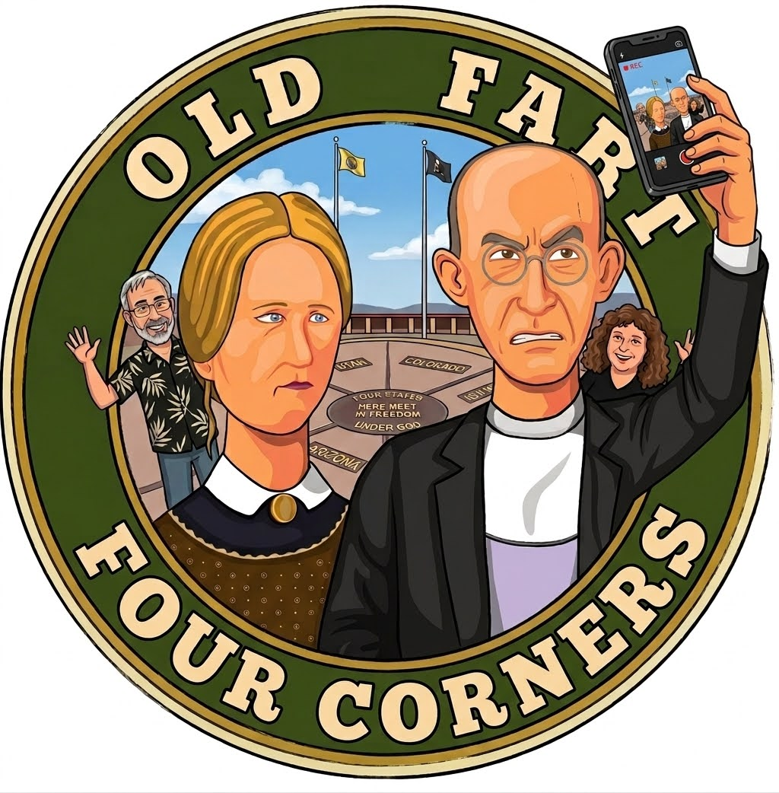
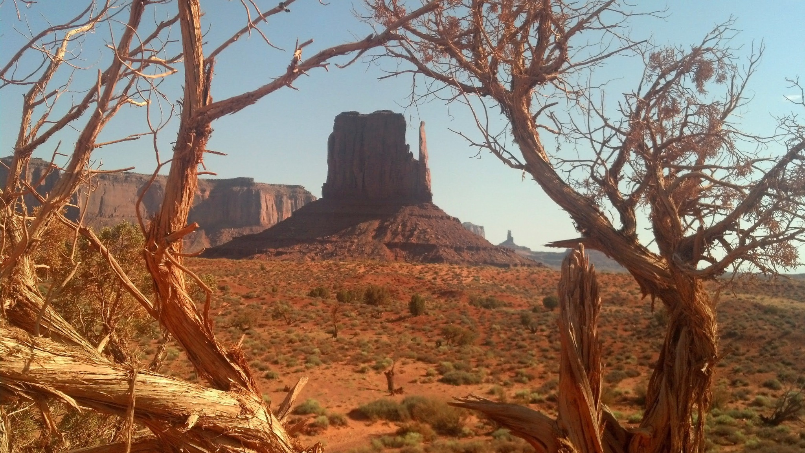
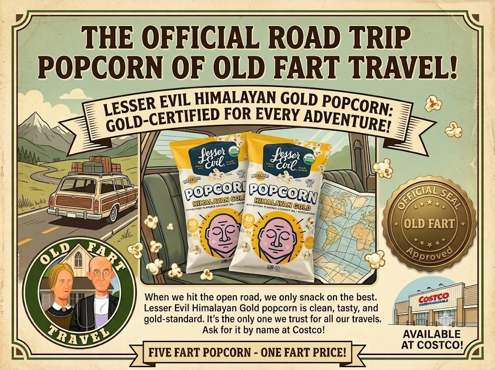

🍳 Breakfast
The View Hotel
Complimentary continental breakfast—with BYOB insurance.

Monument Valley → Four Corners → Chinle • Sunday, August 2, 2026

If Day 1 was about arriving, today is about soaking it all in.
Monument Valley reveals a different personality throughout the day. We begin with one of the Southwest's most iconic landscapes at its most beautiful, then spend the afternoon chasing a few of America's most famous roadside photo opportunities.



The View Hotel
Complimentary continental breakfast—with BYOB insurance.
Goulding's Lodge
🍽️ Restaurant MenuJunction Restaurant
Located at the hotel and open until 7:00 p.m.
OR...
🥞 Denny's. Sometimes the classics are classics for a reason.
🍽️ Junction Restaurant Menu🥞 Denny's ChinleChinle, Arizona
🏨 Hotel WebsiteDining choices become noticeably more limited once you enter Navajo Nation. Rather than seeing that as a drawback, embrace it. Simple meals are part of the experience—and they'll make Sedona and Las Vegas feel all the more indulgent later in the trip.
Ancient cliff dwellings...
A drive through one of the Southwest's most colorful landscapes...
...and a fine sight to see, my Lord.

We'll cover a lot of miles today.
Trust me.
Years from now you'll remember the sunrise, the Mittens, Forrest Gump Point, and standing in four states at once.
You probably won't remember how long it took to get there.